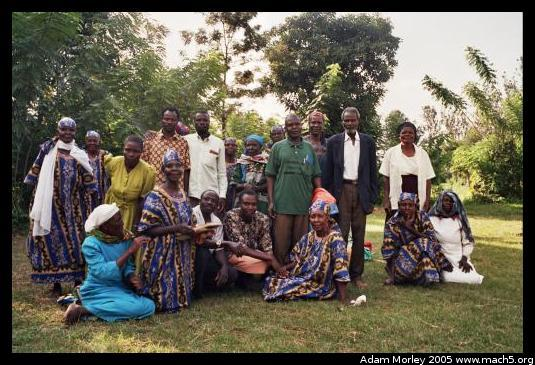
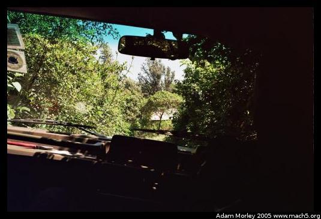
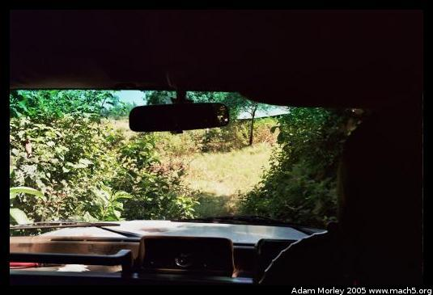
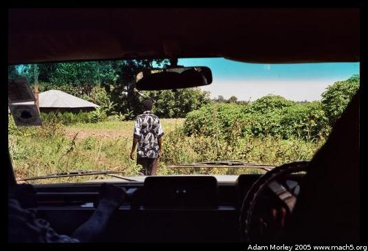
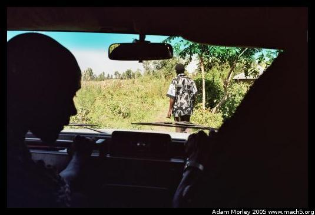
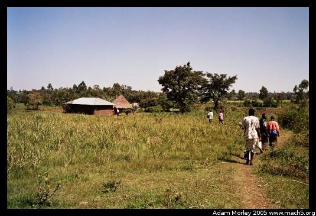
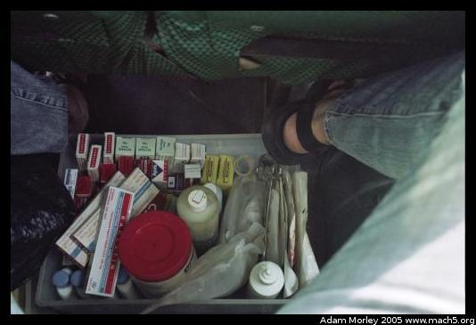
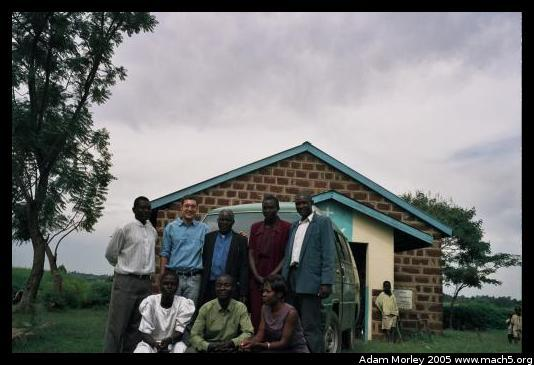
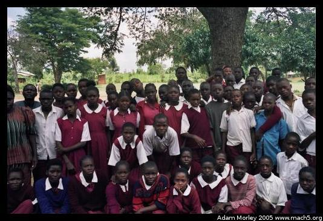

ICODEI runs a number of programs serving the region around Bungoma, Kenya:
A more extensive list is provided on the Volunteer Kenya website.
A group of widows Jenn and I taught about HIV/AIDS. I particularly enjoyed the time we spent together because they were a lively, funny group. They also explained the practice of wife inheritance to me, where the wife of a man who dies will be "inherited" by her husband's family (usually a brother). The first question I usually get when I explain this in my home country is, "What happens when the brother is already married?" Men can have multiple wives in Kenya. This practice is less common today than in the past, as is the practice of wife-inheritance.
   Sometimes, the biggest challenge is getting to the place we're teaching. In the above series of photos, we were headed for a farming coop to teach them about HIV/AIDS. In the first photo, the camera is level. We're not really on a road here, more of a path. It becomes very important to keep your hands inside the vehicle at all times!
And now that we finally got close, we pile out of the vehicle and carry the equipment into the meeting space. You can just barely see it, but the man with the white shirt is carrying the television used to show videos, and just next to the house is a man pushing a bicycle carrying a generator to power the television.
On the way to a mobile medical clinic. Space is tight in the van some days, especially when a mobile clinic and another program goes out in the same car to save gas.
Some ICODEI staff (and me) after a mobile medical clinic at a community church.
My favorite HIV/AIDS education class --- I got to speak English, so it was much easier to interact with the students and introduce humor. Right before we started, I headed to the bathroom, and halfway there a little kid came running after me. Turns out I was headed for the ladies toilets!
Adam can be reached at adam dot morley at gmail dot com